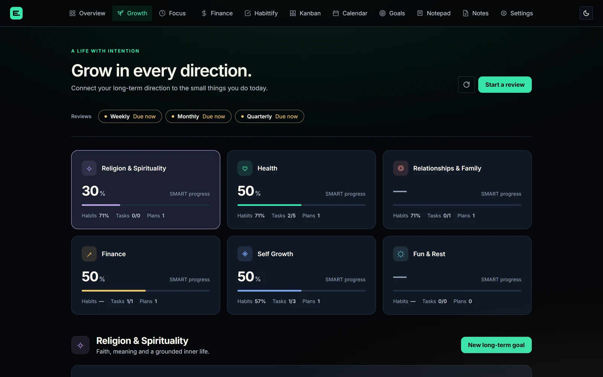
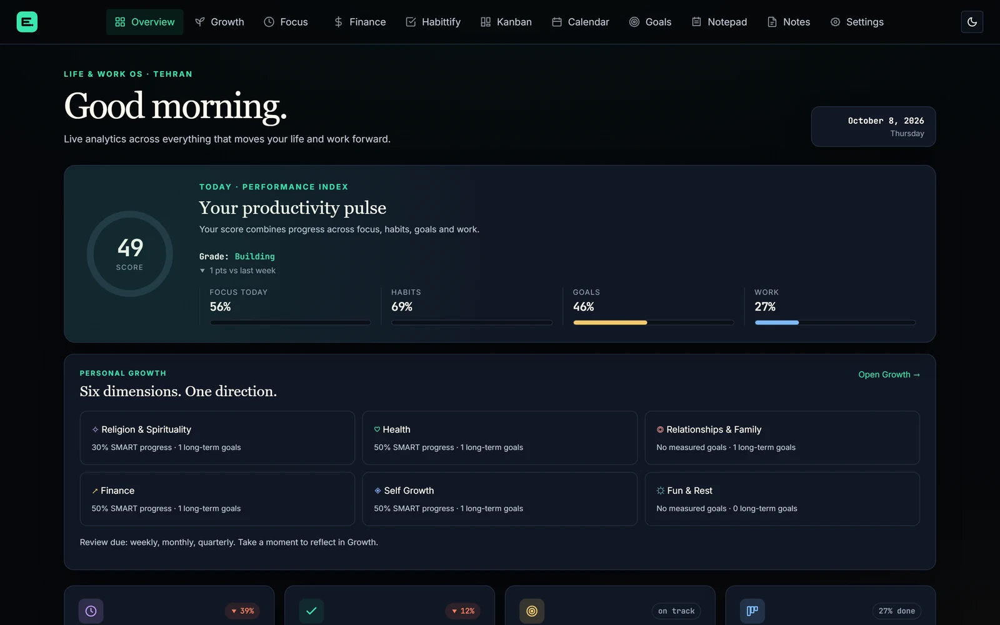
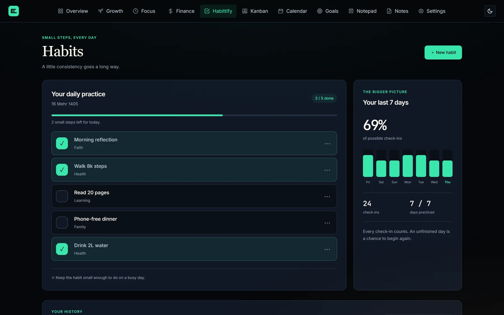
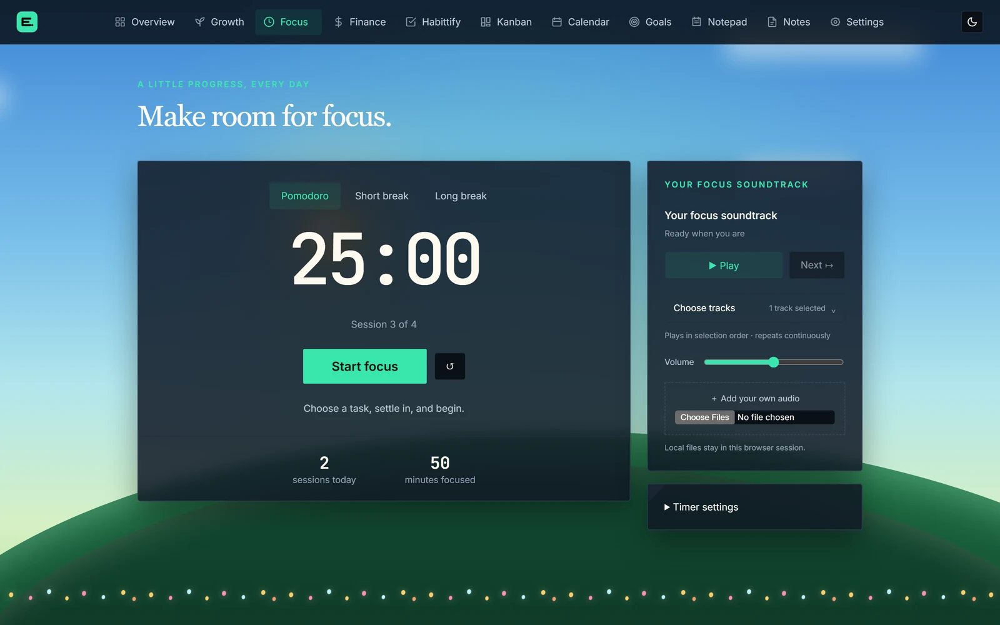
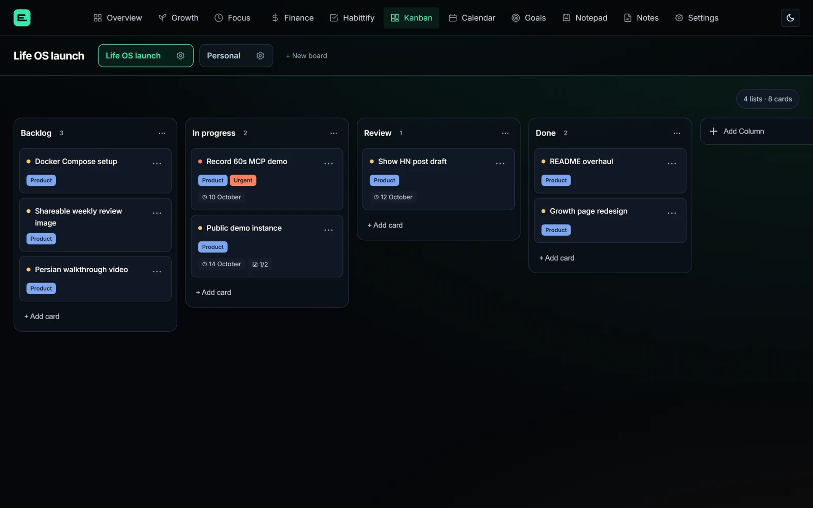

Six dimensions de vie, une direction
Spiritualité, santé, famille, argent, apprentissage et repos, chacun relié à des objectifs à long terme et aux habitudes qui les soutiennent.

Habitudes, objectifs, concentration et argent.
Une application paisible, sur votre propre serveur.

Pourquoi ça existe
Chaque outil est utile à part, mais ensemble ils ne peuvent pas répondre à la seule question qui compte :
« Est-ce que je vais vers la vie que je veux ? »
Un seul endroit, connecté
Une habitude peut faire avancer un objectif, les cartes arrivent dans votre calendrier et la vue d'ensemble transforme tout en un score quotidien.
Spiritualité, santé, famille, argent, apprentissage et repos, chacun relié à des objectifs à long terme et aux habitudes qui les soutiennent.

Des habitudes suffisamment petites pour tenir même dans les jours chargés, avec des séries et une vue sur sept jours.

Un minuteur Pomodoro avec une bande sonore et un ciel qui suit l'heure de la journée.

Des tableaux avec étiquettes, priorités, dates, listes de tâches, commentaires et pièces jointes.

Dépenses et budgets, en plus des dettes et créances, ponctuelles ou récurrentes, saisies directement dans votre comptabilité.
Des objectifs SMART guidés par des listes, des mesures ou la régularité d'une habitude.
Dates d'échéance des cartes et dettes financières ensemble, avec les éléments en retard mis en évidence.
Prêt pour l'IA
Un serveur MCP intégré donne à Claude et aux autres assistants 15 outils sur votre tableau de bord, objectifs, tâches, habitudes, finances et notes.
Auto-hébergement en quelques minutes
PHP simple, MySQL et JavaScript vanilla : pas de framework, pas de build step, rien qui casse à la mise à jour.
# Récupère le code
$ git clone https://github.com/edrisranjbar/lifeos.git && cd lifeos
# Configure ton accès et tes mots de passe
$ cp .env.example .env
# Démarre l'application et MySQL
$ docker compose up -d
# Ouvre http://localhost:8080Application et MySQL avec volumes distincts pour vos données et pièces jointes. Les mises à jour sont simples.
Téléchargez le zip de la dernière release, décompressez-le dans le dossier racine, ajoutez vos infos MySQL. C'est prêt.
Tout hébergement PHP 8.1+ avec MySQL 8 ou MariaDB. Lancez-le localement avec le serveur intégré de PHP.
Tout vit dans votre propre base MySQL. Pas d'abonnement, pas de télémétrie.
Sous licence MIT. Lisez-le, forkez-le, modifiez-le et faites-en votre propre version.
Thèmes sombres et clairs, pensée pour la concentration et des layouts qui fonctionnent sur mobile.
Les issues sont ouvertes et les contributeurs fraîchement arrivés sont les bienvenus.
Commencez aujourd'hui
Gratuit, open source, et en marche sur votre propre serveur en quelques minutes.